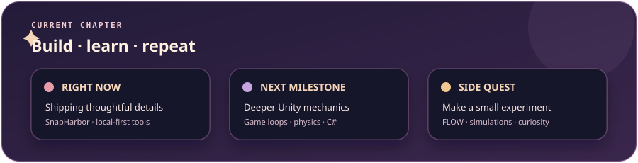
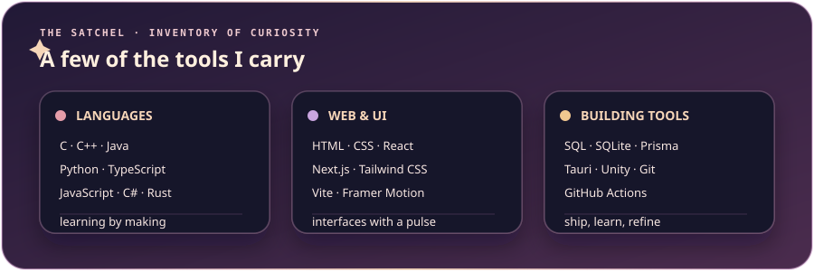
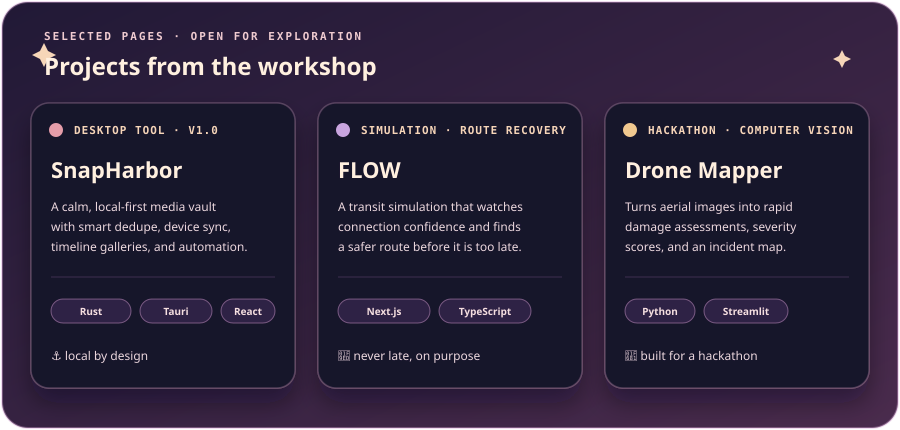

⚓ SnapHarbor
A local-first media vault with smart deduplication, device sync, timeline galleries, and automation.
Rust · Tauri · React · TypeScript · SQLite

ABOUT THE AUTHOR
Hi, I’m Sreejith SH — a Computer Science student at VIT, class of 2029, and an aspiring web developer who likes turning curious ideas into useful little worlds.

THE SATCHEL

SELECTED PAGES

A local-first media vault with smart deduplication, device sync, timeline galleries, and automation.
Rust · Tauri · React · TypeScript · SQLiteA transit simulation that watches connection confidence and recovers routes before a journey falls apart.
Next.js · TypeScript · Tailwind · PrismaA hackathon experiment turning drone imagery into disaster assessments, severity scores, and an incident map.
Python · Streamlit · Gemma 4 · PandasSmall experiments for game loops, physics, and C# mechanics.
Learn the mechanic · break it · understand itGITHUB OBSERVATORY

SEND A SIGNAL
If you found something useful, have an idea, or want to talk about building things, say hello.
